Avant de débuter
Légende :
[entre crochets] = argument à personnaliser
Police_console_verte = commande à taper
Police_console_violette = en mode texte (nano par exemple)
Qu’est-ce que la supervision ?
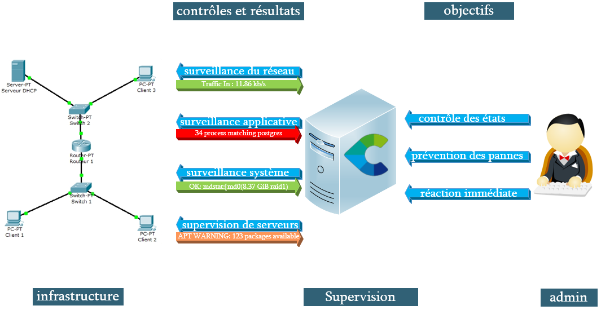
Objectifs :
Installation sans ISO (dans le cas d’une installation sur serveur dédié / Cloud MS Azure)
Surveillance des hôtes
Métrologie et historisation des états
Transmission d’alertes par mail
Cartographie
Sécurisation : SNMPv3, NRPE via SSL/TLS, accès HTTPS
Version Centreon :
Centreon-Web : 2.8.23
Ports principaux du serveur de supervision :
|
161 |
UDP |
SNMP (depuis Centreon) |
|
162 |
UDP |
SNMPTRAP (depuis l’agent) |
|
3306 |
TCP |
MYSQL |
|
5666 |
TCP |
NRPE |
|
5669 |
UDP |
BBDO = Transfert données satellite |
|
12489 |
TCP |
NSClient++ |
Ports principaux des serveurs supervisés :
|
20 |
TCP |
FTP |
|
22 |
TCP |
SSH (conseil : modifier le N°) |
|
25 |
TCP |
SMTP |
|
53 |
UDP |
DNS |
|
80 |
TCP |
HTTP (à remplacer par https) |
|
123 |
UDP |
NTP |
|
443 |
TCP |
HTTP |
|
5669 |
UDP |
BBDO = Transfert données satellite |
Description :
Centreon-Clib est une librairie commune, écrite en C/C++, pour certains modules de Centreon. C'est un pré-requis nécessaire au fonctionnement de Centreon-Engine
Les Centreon Perl Connecteurs et Centreon SSH connecteurs sont des modules optionnels améliorant la vitesse d'exécution des plugins en scripts Perl et en SSH. Ils nécessitent l'utilisation de Centreon Engine
Centreon-Engine est le moteur de supervision qui supervise le système d’informations
Les sondes ou plugins, sont des programmes exécutables obligatoires pour faire fonctionner notre supervision.
Les sondes sont localisées dans /usr/lib/nagios/plugins/
Centreon-Broker SQL est chargé d’insérer les données de supervision en base de données et de transmettre les données de performances à Centreon Broker RRD qui est chargé de générer les fichiers RRD servant à générer les graphiques de performances
Le protocole SNMP permet aux administrateurs réseau de gérer les équipements du réseau et de diagnostiquer les problèmes de réseau
Snmptrapd est le service permettant de récupérer les traps SNMP envoyés par les équipements.
Les traps SNMP sont des informations envoyées en utilisant le protocole SNMP depuis un équipement supervisé vers un serveur de supervision (satellite). Ces informations contiennent plusieurs attributs dont :
Adresse de l’équipement qui a envoyé l’information
L’OID racine (Object Identifier) correspond à l’identifiant du message reçu
Le message envoyé au travers du trap SNMP qui correspond à un ensemble de paramètres
Les mibs : afin de pouvoir interpréter l’évènement reçu, le serveur de supervision doit posséder dans sa configuration le nécessaire pour traduire l’évènement. Pour cela, il doit disposer d’une base de données contenant les OID ainsi que leurs descriptions, c’est ce qu’on appelle les fichiers MIB. Il existe deux types de MIB :
Les MIB standards qui utilisent des OID standardisés et qui sont implémentés par de nombreux constructeurs sur leurs équipements
Les MIB constructeurs qui sont propres à chacun et souvent à chaque modèle d’équipement
Mysql : plusieurs bases de données MySQL sont chargées de stocker la configuration de Centreon, les informations de supervision ainsi que les données de performances
Apache : le serveur Apache est chargé d’héberger l’interface web de Centreon.
Centreon-web est l’interface web de Centreon
Références :
Prérequis :
https://documentation-fr.centreon.com/docs/centreon/en/2.8.x/installation/prerequisites.html
Ports :
https://documentation-fr.centreon.com/docs/centreon/fr/2.8.x/installation/architecture/network.html
Installation via paquets :
https://documentation-fr.centreon.com/docs/centreon/en/2.8.x/installation/from_packages.html
Installation via ISO :
https://documentation-fr.centreon.com/docs/centreon/fr/latest/installation/from_iso.html
Configuration Centreon-Web :
http://sugarbug.fr/atelier/installations/ces/installation-centreon3_46-centOS7/
Installation Centreon IMP :
http://sugarbug.fr/atelier/installations/ces/installation-centreon3_4/centreon_imp/
Installation de Nagvis :
https://www.sugarbug.fr/atelier/techniques/ihmweb/cartographie_supervision/centreon-web28x_nagvis-19x/
https://documentation.centreon.com/docs/centreon-nagvis/en/latest/Install/Nagvis_backend.html
Clapi : http://www.sugarbug.fr/atelier/techniques/ihmweb/centreon/clapi/
Illustration :
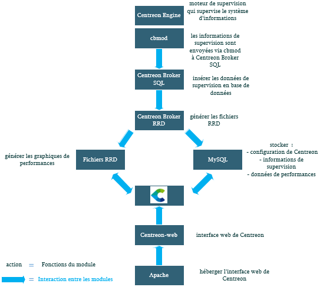
Prérequis / Architecture :
OS :
CentOS 7 minimal
Matériel :
Test (< 50 hôtes) : 1 vCPU / 1 Go mémoire / 10 Go disque
Prod (500 – 2000 hôtes) : 2 vCPU / 2 Go mémoire / 20 Go disque
yum install nano wget mlocate traceroute -y
yum update –y
Désactivation de SELinux
nano /etc/selinux/config
Modifier : SELINUX=disabled
Redémarrage machine :
reboot
Installation des dépôts
cd /root
wget http://yum.centreon.com/standard/3.4/el7/stable/noarch/RPMS/centreon-release-3.4-4.el7.centos.noarch.rpm
yum install --nogpgcheck centreon-release-3.4-4.el7.centos.noarch.rpm
Installation du serveur central
yum install centreon-base-config-centreon-engine centreon
Installer MySQL sur le même serveur
yum install MariaDB-server -y
Fuseau horaire PHP
Création d’un nouveau fichier :
nano /etc/php.d/php-timezone.ini
date.timezone = Europe/Paris
service httpd restart
Désactivation du pare-feu
systemctl stop firewalld
systemctl disable firewalld
systemctl status firewalld
Penser à le réactiver à la fin des installations
Base de données MySQL
mkdir -p /etc/systemd/system/mariadb.service.d/
echo -ne "[Service]\nLimitNOFILE=32000\n" | tee etc/systemd/system/mariadb.service.d/limits.conf
systemctl daemon-reload
service mysqld start
Redémarrer la machine : reboot
yum -y install net-snmp net-snmp-utils
cp /etc/snmp/snmpd.conf /etc/snmp/snmpd.conf.old
Activer le lancement automatique de services au démarrage
systemctl enable httpd.service
systemctl enable snmpd.service
systemctl enable mysql.service
service httpd restart
Pas effectué : Sécurisation de la base donnée :
mysqladmin -u root password 'azerty'
Configuration Via l’interface web
Se connecter sur http://[adresse IP du serveur Centreon]/centreon
Identifiant : admin
Mot de passe : admin
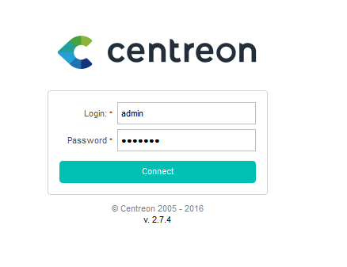
Mise à jour de l’interface web
Sur l'interface de Centreon, sélectionnez :
1. « Configuration » en haut à droite
2. « Pollers » juste en dessous
3. « Apply configuration » :
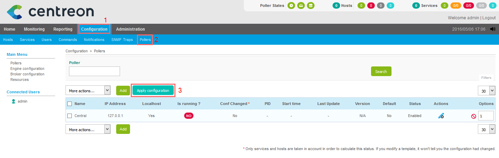
Toujours sur l’interface web :
1. sélectionner « Central », dans le rectangle nommé « Pollers »
2. cocher les quatre premières cases à gauche en dessous d’ « Actions »
3. choisir la méthode « Restart »
4. finalement cliquer sur « Export »
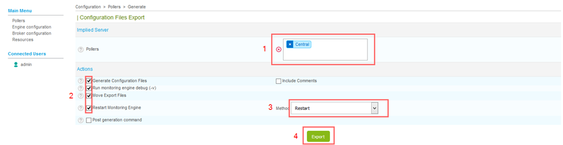
Le résultat attendu :
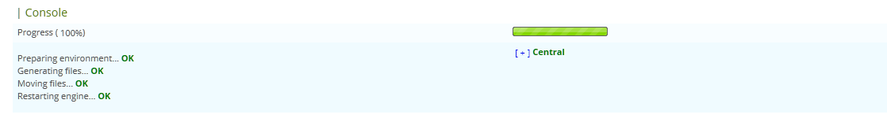
Home : l’accueil
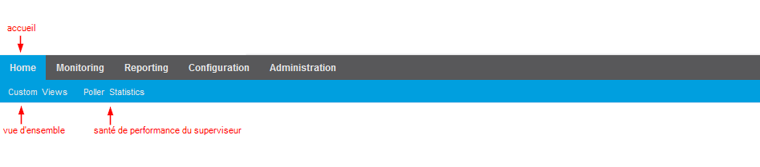
Monitoring : état de la supervision
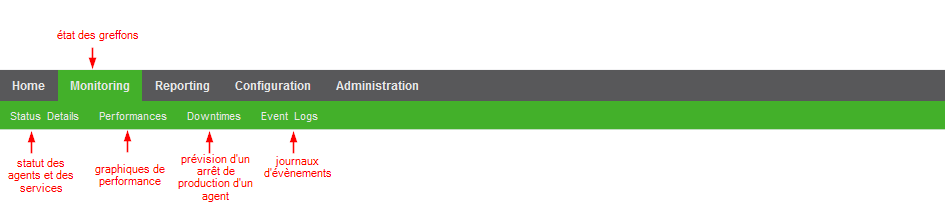
Reporting : disponibilité des greffons
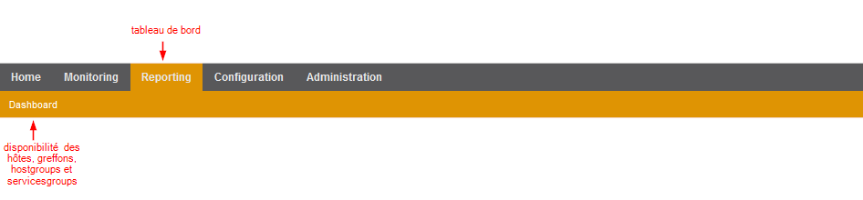
Configuration : ajout / configuration des hôtes, greffons, commandes ...
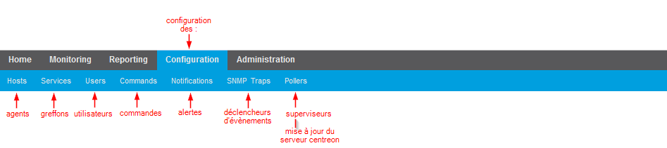
Administration : configuration de Centreon
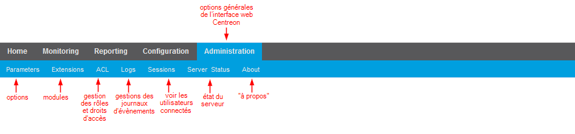
Si le message d’erreur suivant apparaît : « Add innodb_file_per_table=1 in my.cnf file under the [mysqld] section and restart MySQL Server », création d’un nouveau fichier :
nano /etc/my.cnf
[mysqld]
innodb_file_per_table=1
service mysql restart
Langue française
Installation de la langue française :
yum -y install centreon-lang-fr_FR
Redémarrer les services
service cbd start
service centengine start
service centcore start
sudo service snmpd restart
yum install centreon-pp-manager
chmod +x /usr/lib/nagios/plugins/check_icmp
yum install net-snmp net-snmp-libs net-snmp-utils -y
yum install -y snmpcheck net-snmp-devel
Arrêt snmp
sudo service snmpd stop
Modification snmpd.conf
nano /etc/snmp/snmpd.conf :
# Basic SNMP Community Information
# Note Source IPs. Enter in your own IPs that will be allowed to communicate with the service.
# It is recommended to allow localhost so you can run tests with snmpwalk.
# Otherwise omit localhost if it is not needed.
# You can list allowed subnets if you wish. Example below.
#
# Community.Name Source.IP.Allowed
rocommunity public 127.0.0.1
rocommunity public [adresse IP privée]
rocommunity public [adresse IP publique]
rocommunity public [adresse réseau/24]
# Optional location information
syslocation [ville / localisation]
# Optional contact information
syscontact Super User [adresse mail]
# SNMP v3 User Information
Création du l’utilisateur snmpv3 des mots de passe
net-snmp-create-v3-user -ro -A [mot de passe SHA] -a SHA -X [mot de passe AES] -x AES [nom utilisateur snmpv3]
|
Parameter |
Command Line Flag |
snmp.conf token |
|
securityName |
-u NAME |
defSecurityName NAME |
|
authProtocol |
-a (MD5|SHA) |
defAuthType (MD5|SHA) |
|
privProtocol |
-x (AES|DES) |
defPrivType DES |
|
authKey |
-A PASSPHRASE |
defAuthPassphrase PASSPHRASE |
|
privKey |
-X PASSPHRASE |
defPrivPassphrase PASSPHRASE |
|
securityLevel |
-l (noAuthNoPriv|authNoPriv|authPriv) |
defSecurityLevel (noAuthNoPriv|authNoPriv|authPriv) |
|
context |
-n CONTEXTNAME |
defContext CONTEXTNAME |
yum install epel-release -y
yum install perl-Crypt-Rijndael -y
sudo service snmpd start
TEST snmpv3 en local :
snmpwalk -v 3 -u [nom utilisateur snmpv3] -a SHA -A [mot de passe SHA] -x AES -X "[mot de passe AES]" -l authPriv 127.0.0.1
TEST snmpv3 via une sonde en local :
/usr/lib/nagios/plugins/check_centreon_snmp_cpu -H 127.0.0.1 -v 3 -u [nom utilisateur snmpv3] -p '[mot de passe SHA]' --authprotocol SHA --privpassword '[mot de passe AES]' --privprotocol AES -w 80 -c 90
yum install yum-utils
rpm -Uvh --nodeps $(repoquery --location nagios-plugins-perl)
yum update
rpm -Uvh --nodeps $(repoquery --location centreon-plugins)
yum install nrpe nagios-plugins-users nagios-plugins-load nagios-plugins-swap nagios-plugins-disk nagios-plugins-procs
Ajout d’une ligne dans services :
nano /etc/services
nrpe 5666/tcp
rpm -Uvh http://dl.fedoraproject.org/pub/epel/7/x86_64/Packages/e/epel-release-7-11.noarch.rpm
yum --enablerepo=epel -y install nrpe nagios-plugins
yum --enablerepo=epel -y list nagios-plugins*
Configurer et autoriser l’accès au serveur NRPE
Modifier nrpe.cfg :
nano /etc/nagios/nrpe.cfg
allowed_hosts=127.0.0.1,[adresse IP publique], [adresse du serveur centreon],::1
dont_blame_nrpe=1
Ajout de nouvelles lignes (à la fin) dans nrpe.cfg
nano /etc/nagios/nrpe.cfg
#Matériel
command[check_raid]=/usr/lib/nagios/plugins/check_raid.pl --plugin mdstat
command[check_dd]=/usr/lib/nagios/plugins/multi_check -f /usr/lib/nagios/plugins/disque.cmd
command[check_diskstat.sh]=/usr/lib/nagios/plugins/check_diskstat.sh -d sda -W 50 -C 100
command[check_all_disks]=/usr/lib/nagios/plugins/check_disk -w 20 -c 10
command[check_ide_smart]=/usr/lib/nagios/plugins/check_ide_smart -n -d /dev/sda
command[check_smart_attributes]=/usr/lib/nagios/plugins/check_smart_attributes --drive=/dev/sda
command[check_smartmon]= sudo /usr/lib/nagios/plugins/check_smartmon --device=/dev/sda
#OS
command[check_version]=/usr/lib/nagios/plugins/check_version
command[check_apt]=/usr/lib/nagios/plugins/check_apt
command[check_version2]=/usr/lib/nagios/plugins/check_version2
#Réseau
command[check_traffic]=/usr/lib/nagios/plugins/check_iftraffic64.pl -H 127.0.0.1 -C public -i 2 -B -b 1000 -u m --32bit
command[check_centreon_plugins_interfaces]=/usr/lib/nagios/plugins/centreon_plugins.pl --plugin=os::linux::snmp::plugin --mode=interfaces --hostname=127.0.0.1 --snmp-$
#Service_apache
command[check_apache2.sh]=/usr/lib/nagios/plugins/check_apache2.sh
command[check_apache2.py]=/usr/lib/nagios/plugins/check_apache2.py
command[check_apache_status]=/usr/lib/nagios/plugins/check_apache_status
command[check_apache_status-b]=/usr/lib/nagios/plugins/check_apache_status-b
command[check_apache_access.pl]=/usr/lib/nagios/plugins/check_apache_access.pl
command[check_apachestatus.pl]=/usr/lib/nagios/plugins/check_apachestatus.pl
command[check_apache_serverstatus.pl]=/usr/lib/nagios/plugins/check_apache_serverstatus.pl
command[check_service_apache2]=/usr/lib/nagios/plugins/check_process.pl -n apache2
#Système
command[check_load]=/usr/lib/nagios/plugins/check_load -w 3,3,3 -c 5,5,5
command[check_users]=/usr/lib/nagios/plugins/check_users -w 5 -c 10
command[check_zombie_procs]=/usr/lib/nagios/plugins/check_procs -w 5 -c 10 -s Z
command[check_total_procs]=/usr/lib/nagios/plugins/check_procs -w 450 -c 600
command[check_swap]=/usr/lib/nagios/plugins/check_swap -w 30 -c 10
command[check_home]=/usr/lib/nagios/plugins/check_home
command[check_lastuser]=/usr/lib/nagios/plugins/check_lastuser
command[check_centreon_plugins_partitions]=/usr/lib/nagios/plugins/centreon_plugins.pl --plugin=os::linux::local::plugin --mode=list-partitions --filter-name sda*
command[check_centreon_plugins_uptime]=/usr/lib/nagios/plugins/centreon_plugins.pl --plugin=os::linux::local::plugin --mode=uptime --hostname 127.0.0.1
command[check_centreon_plugins_connexion]=/usr/lib/nagios/plugins/centreon_plugins.pl --plugin=os::linux::local::plugin --mode=connections --service="ssh,,,22,,,,10,2$
command[check_centreon_plugins_cpu_details]=/usr/lib/nagios/plugins/centreon_plugins.pl --plugin=os::linux::local::plugin --mode=cpu-detailed --hostname 127.0.0.1
command[check_centreon_plugins_memoire]=/usr/lib/nagios/plugins/centreon_plugins.pl --plugin=os::linux::local::plugin --mode=memory
command[check_centreon_plugins_storage]=/usr/lib/nagios/plugins/centreon_plugins.pl --plugin=os::linux::snmp::plugin --mode=storage --name --regexp --storage=/var --$
command[check_tcp22]=/usr/lib/nagios/plugins/check_tcp -p 22
command[check_tcp80]=/usr/lib/nagios/plugins/check_tcp -p 80
command[check_tcp443]=/usr/lib/nagios/plugins/check_tcp -p 443
cp /usr/local/nagios/libexec/check_nrpe /usr/lib/nagios/plugins/
systemctl restart nrpe
systemctl enable nrpe
TEST nrpe en local :
/usr/lib/nagios/plugins/check_nrpe -H 127.0.0.1
TEST nrpe via une sonde en local :
/usr/lib/nagios/plugins/check_nrpe -H 127.0.0.1 -c check_apt
Troubleshooting NRPE
Vérifier l’état de NRPE :
service nrpe status
Vérifier que le port 5666 de NRPE est bien ouvert :
netstat -an | grep 5666
netstat -at | egrep "nrpe|5666"
cat /etc/services | grep 5666
netstat -l -n | grep 5666
ps aux | grep nrpe
Erreur : « Can't locate utils.pm in @INC (@INC contains: .... »
Copier le fichier « utils.pm » dans le répertoire des sondes
cp /usr/lib64/nagios/plugins/utils.pm /usr/lib/nagios/plugins
Erreur "NRPE: Command timed out after x seconds" ou “Connection refused or timed out"
La commande lancée n’a pas terminé son exécution dans le temps défini, il faut par conséquent augmenter le delai dans le fichier de configuration de NRPE : « command_timeout variable ».
le parefeu
l’adresse du serveur n’est pas indiquée dans le fichier de configuration de l’agent «allowed host ... »
Si xinetd est utilisée, l’adresse du serveur n’est pas indiquée dans le fichier de configuration de l’agent «only_from ... »
le démon NRPE n’est pas installé, ou démarré, ou si oubli de le redémarrer après modifications
"CHECK_NRPE: Received 0 bytes from daemon. Check the remote server logs for an error message." :
il faut vérifier dans les logs pour savoir de quoi il s’agit
The check_nrpe plugin was unable to complete an SSL handshake with the NRPE daemon :
lié à la version d’Openssl installée sur l’agent, et sans doute des problèmes de compatibilité
"NRPE: Unable to read output" :
le chemin du greffon est incorrect
le greffon ne fonctionne pas correctement
"NRPE: Command 'x' not defined" :
la commande ‘x’ n’a pas été définie correctement dans le fichier de configuration de NRPE de l’agent.
"CHECK_NRPE: Socket timeout after 10 seconds" :
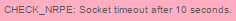
La sonde n’a pas eu le temps nécessaire de récupérer l’info -> ajouter en commentaire une durée d’exécution plus longue (par exemple à la fin du check lancé « -t 20» pour 20 secondes )
CHECK_NRPE: Error - Could not connect to 192.168.30.2: Connection reset by peer
OU
connect to address 192.168.30.2 port 5666: Connection refused
Vérifier que xinetd.d est utilisé :
ls -la /etc/xinetd.d/nrpe
Si résultat = “/etc/xinetd.d/nrpe” => xinetd.d est utilisé
Si résultat = “No such file or directory” => xinetd.d n’est pas utilisé
Si xinetd.d est utilisé, il faut vérifier la configuration :
nano /etc/xinetd.d/nrpe
nano /usr/local/nagios/etc/nrpe.cfg
nano /usr/local/nagios/etc/nrpe/common.cfg
service nagios-nrpe-server restart
service xinetd restart
Modification des règles du pare-feu :
iptables -A INPUT -s [adresse_source] -p udp --dport 161 -j ACCEPT
iptables -A INPUT -s [adresse_source] -p tcp --dport 5666 -j ACCEPT
iptables -A INPUT -s [adresse_source] -p udp --dport 161 -j ACCEPT
iptables -A INPUT -s [adresse_source] -p tcp --dport 5666 -j ACCEPT
Clapi est installé de base
Commande (tout en un) pour appliquer les nouvelles modifications et redémarrer le moteur de supervision :
centreon -u admin -p [mot de passe centreon] -a APPLYCFG -v 1
Redémarrer le moniteur de supervision :
centreon -u admin -p [mot de passe centreon] -a POLLERRESTART -v 1
Pour exporter une configuration via Clapi :
centreon -u admin -p [mot de passe centreon] -er [nom fichier à créer contenant la configuration clapi]
Pour importer une configuration via Clapi :
centreon -u admin -p [mot de passe centreon] -i [fichier contenant une ancienne configuration clapi]
yum install postfix mailx cyrus-sasl-plain -y
echo "smtp.gmail.com [adresse mail en @gmail.com]:[mot de passe accès Gmail]" > /etc/postfix/sasl_passwd
chmod 400 /etc/postfix/sasl_passwd
Modifier main.cf :
nano /etc/postfix/main.cf
relayhost = [smtp.gmail.com]:587
Ajouter à la fin de main.cf :
smtp_sasl_auth_enable = yes
smtp_sasl_password_maps = hash:/etc/postfix/sasl_passwd
smtp_sasl_security_options = noanonymous
# Secure channel TLS with exact nexthop name match.
smtp_tls_security_level = secure
smtp_tls_mandatory_protocols = TLSv1
smtp_tls_mandatory_ciphers = high
smtp_tls_secure_cert_match = nexthop
smtp_tls_CAfile = /etc/pki/tls/certs/ca-bundle.crt
postmap /etc/postfix/sasl_passwd
service postfix restart
Test d’envoi de mail :
echo "Test d alerte de postfix" | mail -s "tentative envoi d alerte depuis Centreon" [adresse mail]
yum install mod_ssl openssl
openssl genrsa -out ca.key 1024
openssl req -new -key ca.key -out ca.csr
Exemple : Country Name (2 letter code) [XX]:FR
State or Province Name (full name) []:Paris
Locality Name (eg, city) [Default City]:Paris
Organization Name (eg, company) [Default Company Ltd]:Ac-Corp
Organizational Unit Name (eg, section) []:DSI
Common Name (eg, your name or your server's hostname) []:supervision.ac-corp.site
Email Address []:[adresse mail]
openssl x509 -req -days 365 -in ca.csr -signkey ca.key -out ca.crt
cp ca.crt /etc/pki/tls/certs
cp ca.key /etc/pki/tls/private/ca.key
cp ca.csr /etc/pki/tls/private/ca.csr
nano /etc/httpd/conf.d/10-centreon.conf
Mettre à la fin <VirtualHost *:443>
SSLEngine on
SSLCertificateFile /etc/pki/tls/certs/ca.crt
SSLCertificateKeyFile /etc/pki/tls/private/ca.key
<Directory /usr/share/centreon/www >
AllowOverride All
</Directory>
</VirtualHost>
service httpd restart
yum install graphviz wget git -y
cd /usr/local/src
wget http://www.nagvis.org/share/nagvis-1.9.8.tar.gz
tar xzf nagvis-1.9.8.tar.gz
cd nagvis-1.9.8
./install.sh -q -n /usr/sbin -p /usr/share/nagvis -u apache -g apache -w /etc/httpd/conf.d -a y
service httpd reload
cd /usr/local/src
git clone https://github.com/centreon/centreon-nagvis-backend.git
mv centreon-nagvis-backend/GlobalBackendcentreonbroker.php /usr/share/nagvis/share/server/core/classes/
chown apache: /usr/share/nagvis/share/server/core/classes/GlobalBackendcentreonbroker.php
chmod 664 /usr/share/nagvis/share/server/core/classes/GlobalBackendcentreonbroker.php
nano /usr/share/nagvis/share/server/core/classes/GlobalBackendcentreonbroker.php
remplacer : if ($row['has_been_checked'] == '0' || $row['current_state'] == '') {
par : if (isset($e) && $row['has_been_checked'] == '0' || $row['current_state'] == '') {
mv /usr/share/nagvis/etc/nagvis.ini.php /usr/share/nagvis/etc/nagvis.ini.php.old
Création d’un nouveau fichier :
nano /usr/share/nagvis/etc/nagvis.ini.php
[global]
authmodule="CoreAuthModSQLite"
authorisationmodule="CoreAuthorisationModSQLite"
dateformat="Y-m-d H:i:s"
file_group="apache"
file_mode="660"
language_detection="user,session,browser,config"
language="en_US"
refreshtime=60
sesscookiedomain="auto-detect"
sesscookiepath="/"
sesscookieduration="86400"
startmodule="Overview"
startaction="view"
[paths]
base="/usr/share/nagvis/"
htmlbase="/nagvis"
htmlcgi="/centreon"
[defaults]
backend="centreonbroker"
backgroundcolor="#ffffff"
contextmenu=1
contexttemplate="default"
event_on_load=0
event_repeat_interval=0
event_repeat_duration=-1
eventbackground=0
eventhighlight=1
eventhighlightduration=30000
eventhighlightinterval=500
eventlog=0
eventloghidden="1"
eventscroll=1
headermenu="1"
headertemplate="default"
hovermenu=1
hovertemplate="default"
hoverdelay=0
hoverchildsshow=1
hoverchildslimit="10"
hoverchildsorder="asc"
hoverchildssort="s"
icons="std_medium"
onlyhardstates=0
recognizeservices=1
showinlists=1
showinmultisite=1
urltarget="_parent"
hosturl="[htmlcgi]/main.php?p=20201&o=svc&host_search=[host_name]&search=&poller=&hostgroup=&output_search="
hostgroupurl=
serviceurl="[htmlcgi]/main.php?p=20201&o=svcd&host_name=[host_name]&service_description=[service_description]&poller=&hostgroup=&output_search="
servicegroupurl=
mapurl="[htmlcgi]/main.php?p=243&map=[map_name]"
view_template="default"
label_show=1
[index]
backgroundcolor=#ffffff
headermenu="1"
headertemplate="default"
showmaps=1
showrotations=1
showmapthumbs=0
[automap]
[wui]
maplocktime=5
grid_show=0
grid_color="#D5DCEF"
grid_steps=32
[worker]
interval=10
updateobjectstates=30
[backend_centreonbroker]
backendtype="centreonbroker"
statushost=""
dbhost="localhost"
dbport=3306
dbname="centreon_storage"
dbuser="centreon"
dbpass="[mot de passe base de donnée > par défaut : centreon]"
dbinstancename="default"
htmlcgi="/centreon"
[states]
Modification 11-nagvis.conf :
nano /etc/httpd/conf.d/11-nagvis.conf
#Alias /nagvis "/usr/local/nagvis/share"
Alias /nagvis "/usr/share/nagvis/share"
#<Directory "/usr/local/nagvis/share">
<Directory "/usr/share/nagvis/share">
Options FollowSymLinks
AllowOverride All
Require all granted
#Order allow,deny
Allow from all
<IfModule mod_rewrite.c>
RewriteEngine On
RewriteBase /nagvis
RewriteCond %{REQUEST_URI} ^/nagvis/frontend/(wui|nagvis-js)
RewriteCond %{QUERY_STRING} map=(.*)
RewriteRule ^(.*)$ /nagvis/frontend/nagvis-js/index.php?mod=Map&act=v$
RewriteCond %{REQUEST_URI} ^/nagvis/frontend(/wui)?/?(index.php)?$
RewriteRule ^(.*)$ /nagvis/frontend/nagvis-js/index.php [R=301,L]
RewriteCond %{REQUEST_URI} ^/nagvis/frontend/nagvis-js
RewriteCond %{QUERY_STRING} !mod
RewriteCond %{QUERY_STRING} rotation=(.*)
RewriteRule ^(.*)$ /nagvis/frontend/nagvis-js/index.php?mod=Rotation&$
</IfModule>
</Directory>
Modification des alertes sonores de Nagvis :
Menu des alertes sonores dans Nagvis : configuration générale > states > unreachable_sound
Répertoire contenant les fichiers mp3 :
cd /usr/share/nagvis/share/userfiles/sounds/
Sécurisation SSH
Modification des lignes dans sshd_config :
nano /etc/ssh/sshd_config
Port 2222
PermitRootLogin no
service sshd restart
reboot
Installation Fail2ban :
sudo yum install epel-release -y
yum install fail2ban -y
sudo systemctl enable fail2ban
chkconfig fail2ban on
Création du fichier jail.local :
nano /etc/fail2ban/jail.local
[DEFAULT]
ignoreip = 127.0.0.1 [adresse réseau local concerné / 24] [adresse IP des machines connectées]
bantime = 3600
findtime = 1800
maxretry = 5
[ssh-iptables]
enabled = true
filter = sshd
action = iptables[name=SSH, port=2222, protocol=tcp]
logpath = /var/log/secure
maxretry = 5
destemail = [adresse mail de l’administrateur]
sender = postmaster@email.net
sendername = Fail2Ban
mta = sendmail
service fail2ban start
service fail2ban restart
sudo fail2ban-client status
sudo fail2ban-client status sshd
Description de la configuration de jail.local :
maxretry = nombre de fois qu’un utilisateur peut réessayer de se connecter pendant une durée définie = findtime avant d’être banni pour la durée = bantime.
ignoreip permet d’ajouter des adresses IP qui seront exclues des jails. Ensuite vient la partie de paramétrage des notifications par email. Mettre sendmail pour Postfix.
La ligne action détermine le type d’action à entreprendre lors d’un bannissement. Par défaut elle est renseignée à :
%action_s qui signifie que l’IP est bannie sans notification.
%action_mws = envoie un email avec l’IP et le résultat du WHOIS
%action_mwls envoie un email avec l’IP, le résultat du WHOIS et les lignes correspondantes dans les logs.
Ensuite il est possible d’ajouter des sections pour les jails, ici uniquement = [sshd] que l’on active avec enabled = true.
Supprimer l’historique de l’ensemble des commandes précédemment tapées :
Les commandes suivantes supprimera l’historique de tous les utilisateurs :
history -c
history -w